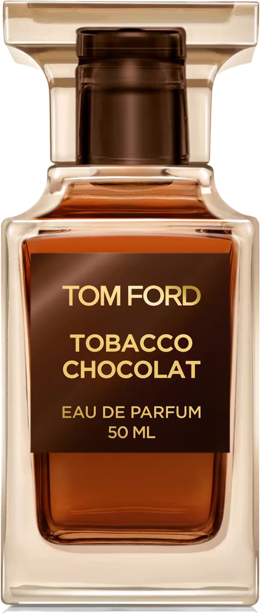

Tom Ford'un yeni kokusu
Private Blend · 2026
Tom Ford · Private Blend
Üst notalar
Portakal
Akigalawood
Kalp notaları
Bitter Çikolata
Kakao
kavrulmuş tütün yaprakları
TOBACCO
CHOCOLAT
ve bitter çikolata
Cocoa Smoke akoru
Dip notalar
Tütün · Paçuli
Peru Balsamı
Tobacco Chocolat
Eau de Parfum · Tom Ford Private Blend
şimdi Splitcim'de